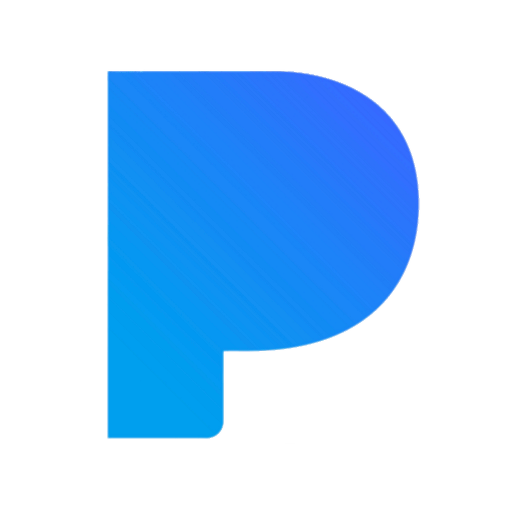

Reconnaître les performances des artistes congolais évoluant en RDC au-delà du marché national et africain.
La Certification IMC Export Monde a pour objectif de reconnaître la capacité d'un artiste congolais évoluant en République démocratique du Congo à développer des performances significatives au-delà du marché africain.
Elle reconnaît les performances réalisées sur plusieurs marchés mondiaux, conformément aux critères, aux seuils et à la méthodologie établis par l'Institut Musical Congolais.
La Certification IMC Export Monde répond à des conditions d'éligibilité spécifiques.
La certification est destinée exclusivement aux artistes congolais évoluant principalement en République démocratique du Congo.
La nationalité congolaise seule ne suffit pas. L'artiste doit principalement développer son activité artistique depuis la RDC.
L'artiste doit démontrer des performances significatives sur plusieurs marchés hors du continent africain.
L'IMC peut demander des éléments permettant de confirmer l'éligibilité et l'activité principale de l'artiste en RDC.
La Certification IMC Export Monde permet de mettre en évidence la capacité d'un artiste évoluant en RDC à développer son audience au-delà du marché africain.
Les seuils applicables à la Certification IMC Export Monde sont plus élevés que ceux de la Certification IMC.
Single : 750 000 IES
Album : 2 500 IEV
Single : 1 500 000 IES
Album : 10 000 IEV
Single : 3 000 000 IES
Album : 20 000 IEV
Single : 15 000 000 IES
Album : 100 000 IEV
Les performances sont évaluées à partir de données vérifiables conformément aux règles de calcul de l'IMC.
1 stream premium = 1 IES
Les streams provenant des offres freemium ne sont pas comptabilisés.
1 vente de single = 150 IES
1 vente d'album = 1 IEV
1 500 IES = 1 IEV
La période de comptabilisation commence à partir de la date officielle de sortie de l'œuvre.
Pour la Certification IMC Export Monde, toutes les plateformes légales de streaming et de téléchargement peuvent être prises en compte lorsque leurs données permettent de mesurer et de vérifier les performances.
Spotify
Audiomack

Apple Music
Boomplay
iTunes
Amazon Music
DEEZER
YOUTUBE MUSIC
TIDAL

PANDORA
La liste ci-dessus présente quelques-unes des plateformes pouvant fournir des données utilisées par l'IMC. Elle n'est pas exhaustive : toutes les plateformes légales de streaming et de téléchargement peuvent être prises en compte dans l'évaluation des performances Export Monde.
La vérification d'une Certification IMC Export Monde peut être plus approfondie que celle d'une certification réalisée exclusivement sur le marché congolais, notamment en raison du nombre de marchés africains concernés.
Identité de l'artiste ou du groupe.
Éléments permettant de vérifier que l'artiste exerce principalement son activité artistique depuis la RDC.
Nom exact de l'œuvre concernée.
Date officielle de sortie de l'œuvre.
Données de consommation permettant de vérifier les performances.
Données relatives aux différents marchés africains concernés.
Captures d'écran, rapports statistiques ou données provenant des plateformes concernées.
Tout document complémentaire pouvant être demandé par l'IMC.
La vérification peut nécessiter davantage de temps lorsqu'elle implique plusieurs marchés, plusieurs plateformes ou des données devant être contrôlées de manière approfondie.
L'atteinte d'un seuil ne constitue pas à elle seule une garantie d'attribution.
La certification est attribuée uniquement lorsque l'œuvre atteint les seuils applicables et respecte les critères d'éligibilité, de vérification et de méthodologie définis par l'IMC.
L'IMC peut demander des éléments complémentaires afin de vérifier les performances réalisées sur les différents marchés mondiaux.
L'affiliation Ultra permet un suivi automatique de l'éligibilité à la Certification IMC Export Monde.
L'IMC suit automatiquement les performances de l'artiste conformément aux conditions de l'offre Ultra.
L'artiste est informé lorsque son œuvre devient éligible à une certification.
L'éligibilité reste soumise aux critères, seuils et procédures de vérification établis par l'IMC.
L'affiliation Premium permet le suivi automatique de l'éligibilité, sans garantir l'obtention de la certification.
Les frais concernent les artistes et structures qui ne sont pas affiliés à l'IMC.
Frais de demande et de traitement d'une certification pour un single.
Frais de demande et de traitement d'une certification pour un album.
Les artistes affiliés à l'IMC bénéficient d'un suivi automatique de leur éligibilité conformément aux conditions de leur offre d'affiliation.
Vous êtes un artiste congolais évoluant en RDC et souhaitez soumettre une œuvre à l'IMC ?
Demander une certificationDécouvrez également les autres certifications proposées par l'Institut Musical Congolais.
© 2026 Institut Musical Congolais